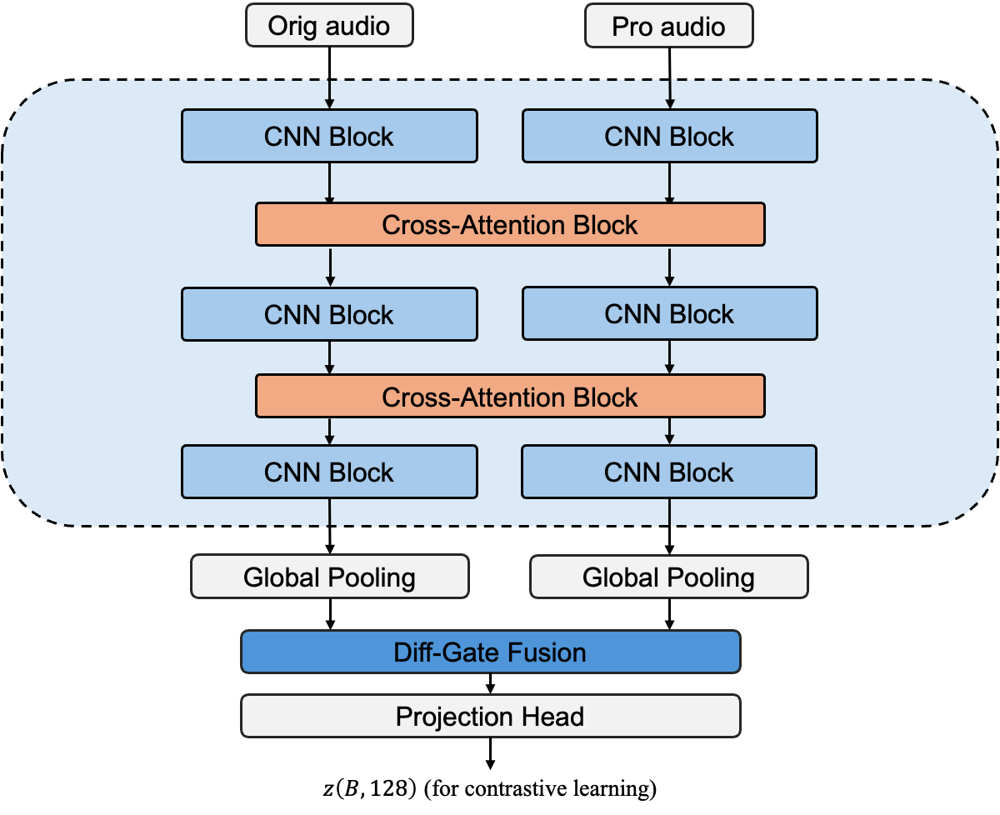

Self-ref
Forms an identity target from the processed reference. It does not require the reference dry signal.
ISMIR 2026
Beyond Dry References: Learning Relative Audio Effects Representations via Contrastive Distance Learning
RelFx learns the effect transformation between two audio signals and transfers that transformation to new musical content. This page presents case-matched audio comparisons under the Fx-Encoder++ MUSDB18 protocol.
Galaxy Audio Effect Team
Tencent Music Entertainment
27th International Society for Music Information Retrieval Conference
Within each case, all methods share the source, processed reference, seven-processor chain, and seven parameter initializations, and are evaluated against the same ground truth. Oracle additionally receives the reference dry signal.
Relative representation
Two weight-shared branches compare original and processed audio. Cross-attention exchanges information between the branches, and Diff-Gate fusion produces a compact representation of their effect transformation.

Forms an identity target from the processed reference. It does not require the reference dry signal.
Uses the source signal as a shared anchor when matching the reference and optimized transformations.
Uses the ground-truth dry and wet reference pair. This analysis-only condition is not a deployable setting.